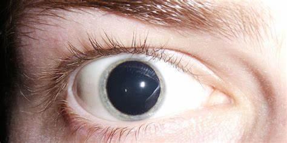

LSD
El LSD es un alucinógeno que altera el pensamiento, las emociones y la percepción. Los efectos pueden ser impredecibles y causar alucinaciones, ansiedad o pánico extremo.
consecuencias
El LSD puede dañar el cuerpo de diferentes maneras y puede llevar a padecimientos como Aumento en el ritmo cardíaco, la presión sanguínea, la frecuencia respiratoria y la temperatura corporal Insomnio, inapetencia, temblores y sudoración Problemas mentales que incluyen ansiedad, depresión y esquizofrenia
efectos
Aumento en el ritmo cardíaco, la presión sanguínea, la frecuencia respiratoria y la temperatura corporal. Insomnio, inapetencia, temblores y sudoración. Problemas mentales que incluyen ansiedad, depresión y esquizofrenia. Pupilas dilatadas. Salivación o boca seca. Hormigueo en los dedos de los pies. Debilidad. Trastornos emocionales como ansiedad, depresión, desorientación o paranoia. Mareos, náuseas, taquicardia y convulsiones. Sudoración o escalofríos. Visión borrosa
